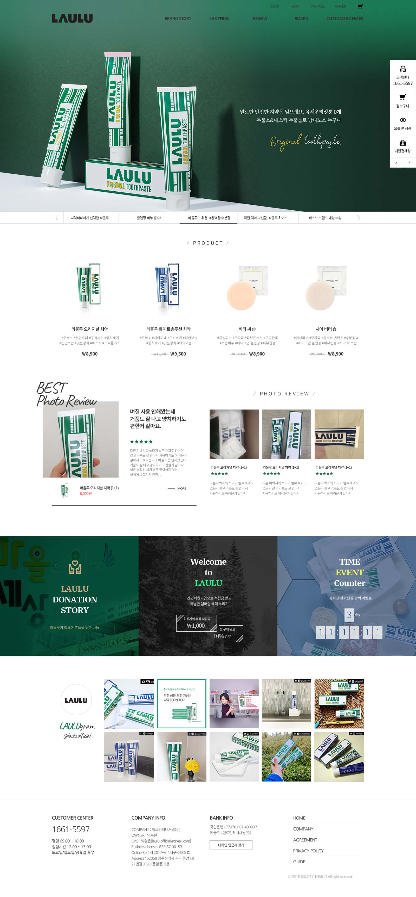
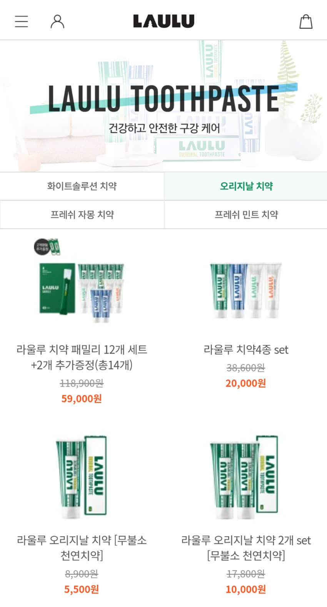

PC 메인시안

Mobile 메인시안
Mobile 메뉴 오픈

Mobile 상품 목록

Mobile 이벤트
PC
PC와 모바일 메인에는 브랜드 이미지와 현재 진행중인 프로모션 정보를 빠르게 탐색할 수 있도록 풀 사이즈의 비주얼 슬라이드를 배치시켰습니다.
PC 페이지에서는 상품 구매보다는 정보 탐색이 더 이루어지는 유저 특성을 고려하여 대표 상품만을 메인에서 노출시키고 고객 리뷰와 이벤트 정보, 인스타그램 타임라인으로 레이아웃을 구성하여 컨텐츠 탐색을 유도했습니다.
Mobile
모바일에서는 다양한 상품군을 한눈에 볼 수 있도록 메인에 게시했습니다. 비회원 상태로 모바일 페이지에 접속했을 때 메뉴에 회원 혜택과 포인트 컬러로 강조된 버튼으로 회원가입을 유도하는 시안으로 진행되었습니다.
상품 목록을 분류하여 버튼으로 쉽게 상품군을 이동할 수 있도록 디자인했습니다.
디자인 100%
퍼블리싱 100% (메이크샵)